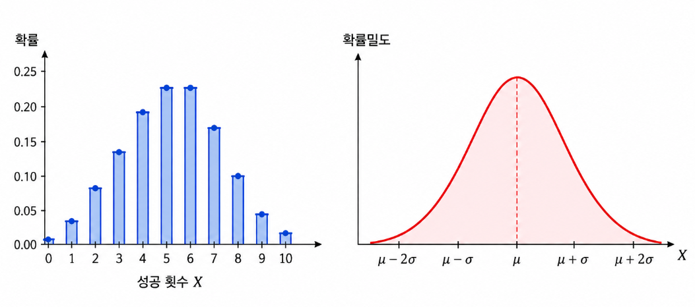
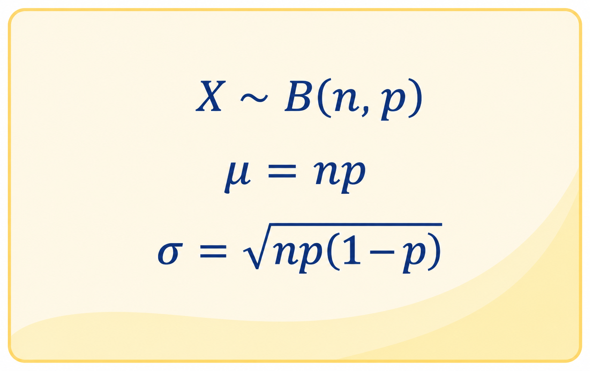
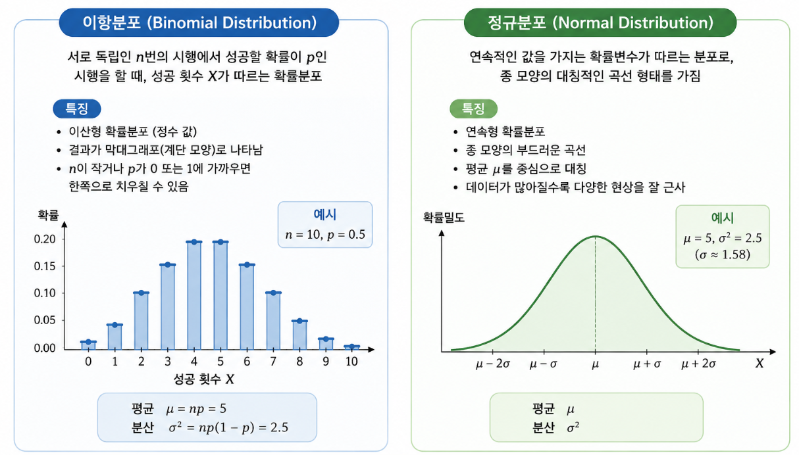

이 시뮬레이터는 무엇인가요?
시행 횟수 n과 성공 확률 p를 조절하면 이항분포의 확률막대와 정규분포 근사곡선이 동시에 그려집니다. 학생들은 두 그래프가 언제 잘 겹치는지 관찰하며 정규근사의 의미를 이해할 수 있습니다.
막대그래프와 곡선을 겹쳐 보며 정규근사의 조건을 탐구하는 수업용 도구
갈톤보드 실험에서 보았던 막대그래프는 이항분포로 설명할 수 있습니다. 이번 수업에서는 이항분포의 막대그래프 위에 정규분포 곡선을 겹쳐 보며, 어떤 조건에서 두 분포가 서로 비슷해지는지 직접 확인합니다.

시행 횟수 n과 성공 확률 p를 조절하면 이항분포의 확률막대와 정규분포 근사곡선이 동시에 그려집니다. 학생들은 두 그래프가 언제 잘 겹치는지 관찰하며 정규근사의 의미를 이해할 수 있습니다.
이항분포의 평균과 표준편차를 이용해 정규분포를 겹쳐 그립니다.


n과 p를 직접 바꾸며 이항분포와 정규분포가 얼마나 비슷해지는지 관찰해 봅시다.
실제로 떨어뜨린 공의 분포와 이론적 정규분포 곡선을 겹쳐 보고, 닮음 점수를 확인해 봅시다.
공식 조건을 먼저 외우기보다, 그래프를 직접 관찰하고 “비슷해지는 순간”을 찾아봅시다.
아래 버튼을 눌러 조건을 비교하고, 그래프를 관찰한 뒤 기록표에 저장해 봅시다.
두 그래프가 얼마나 비슷해 보이나요?
학생의 눈으로 판단한 결과와 컴퓨터의 닮음 점수를 비교하면서, 정규근사가 잘 되는 조건을 찾아봅시다.
| 번호 | n | p | 학생 판단 | 닮음 점수 | 그래프 모양 해석 |
|---|---|---|---|---|---|
| 아직 저장된 관찰이 없습니다. | |||||
이번에는 그래프와 닮음 점수를 먼저 보여주지 않습니다. n과 p만 보고 정규근사가 잘 될지 예측해 보세요.